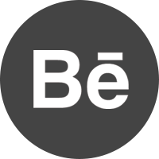

Ana Avila
Work
About
Resume
Ana Avila
Work
About
Resume
Hello World! My name is Ana,
I’m a UX Designer with a
background in Computer Science
UX Designer
California, USA

UX Case Studies
XD Creative Challenges
Augmented Reality
3D Work
Graphic design
Computer Programs